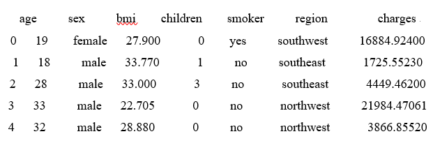

向量是机器学习、人工智能用于数据表示的基本方法，是一种很重要的数据类型。例如机器学习中的投影运算、核函数表示、升维与降维、Fisher识别、PCA主成本分析等都基于向量来表达与实现。
向量是具有方向与大小的有向线段，它与起点位置无关，只与线段长度和方向有关。
人工智能机器学习考虑向量最多的是方向。
特征可用向量表示，可以二维，也可以n维。
例1 保险公司预测房屋保险的保费时，考虑的因素至少有age（年龄）、sex（性别）、bmi（健康指数）、children（子女数）、smoker（是否吸烟）、region（区域）、charges（往年保费）七种，因此用于表征每个客户的向量至少含有7个特征（7维向量）：（age，sex，bmi，children，smoker，region，charges）。
假设我们只考虑两个特征：bmi、chcharges。每一个男士A特征为（27.9,16884.924），第二位女士B特征为（33,4449.462），第三位女士C特征为（28.88,3866.85520）。
两个向量的“积”，相当于两个“方向与方向的乘积”。向量的3种关系：
$\theta=180°$
$(\cos \theta=-1)$
$0<\theta<180°$
$(-1<\cos\theta<1)$
$\theta=0°$
$(\cos\theta=1)$
我们根据两个向量的夹角来判断向量之间的相似度。夹角θ越小，cosθ值越大，相似度越高。
A=（27.9,16884.924），B=（33.77,1725.5523），C=（33,4449.462）
Step1 导入库
#导入numpy库
import numpy as np
Step2 构建向量
#构建行向量，注意：两个中括号
A=np.array([[27.9,16884.924]])
B=np.array([[33,4449.462]])
C=np.array([[28.88,3866.85520]])
Step3 计算A、B、C之间的夹角余弦值
#计算AB内积，其中B.T为B的转置，把行向量转置成列向量
inner_AB=A.dot(B.T)
#A.dot(B.T为向量A、B的内积函数
inner_AC=A.dot(C.T)
#np.linalg.norm()为向量求模函数
inner_BC=B.dot(C.T)
print("A、B夹角余弦：",inner_AB/(np.linalg.norm(A)*np.linalg.norm(B)))
print("A、C夹角余弦：",inner_AC/(np.linalg.norm(A)*np.linalg.norm(C)))
print("B、C夹角余弦：",inner_BC/(np.linalg.norm(B)*np.linalg.norm(C)))
Step4 结论
A、B夹角余弦：0.99998309
A、C夹角余弦：0.99998339
B、C夹角余弦：1
由同学们选择，系统给予评判。
任务：鸢（yuān）尾花数据集iris有50个样本数据构成。每个样本有4个特征（属性）：Sepal.Length（花萼长度）、Sepal.Width（花萼宽度）、Petal.Length（花瓣长度）、Petal.Width（花瓣宽度），单位是cm。
选择一个样本Iris Setosa（山鸢尾）和一个样本Iris Versicolour（杂色鸢尾）。
Iris Setosa（山鸢尾）特征：（5.1, 3.5, 1.4, 0.2）
Iris Versicolour（杂色鸢尾）特征：(7, 3.2, 4.7, 1.4)
若有一个新样本，其特征为：(4.9, 3, 1.4, 0.2)，判断其最有可能属于Iris Setosa（山鸢尾）或Iris Versicolour（杂色鸢尾）中哪一种？
Step1 导入库
import numpy as np #导入numpy库
Step2 构建向量
A=np.array([[5.1, 3.5, 1.4, 0.2]]) #Iris Setosa（山鸢尾）
B=np.array([[7, 3.2, 4.7, 1.4]]) # Iris Versicolour（杂色鸢尾）
C=np.array([[4.9, 3, 1.4, 0.2]]) #未知类型
Step3 计算A、B、C之间的夹角余弦值
inner_AC=A.dot(C.T) #计算AC内积
inner_BC=B.dot(C.T) #计算BC内积
#np.linalg.norm()为向量求模函数
print("A、C夹角余弦：",inner_AC/(np.linalg.norm(A)*np.linalg.norm(C)))
print("B、C夹角余弦：",inner_BC/(np.linalg.norm(B)*np.linalg.norm(C)))
Step4 结论
A、C夹角余弦：0.99857916
B、C夹角余弦：0.94000276
由此可知，C与A相似度更高，C更可能属于Iris Setosa（山鸢尾）。事实也如此。